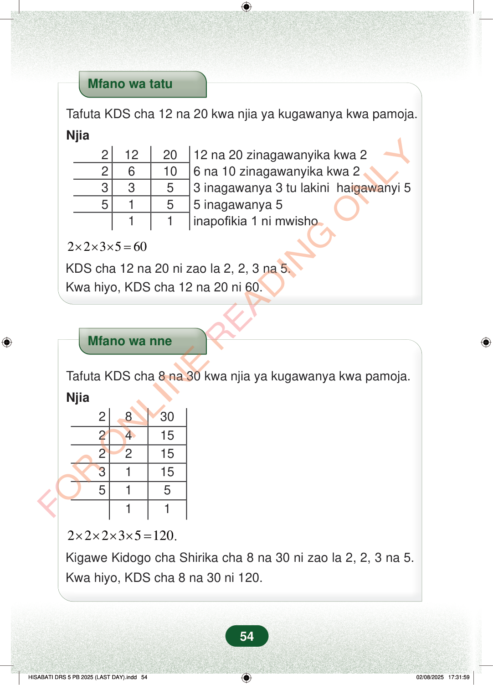

Mfano wa tatuTafuta KDS cha 12 na 20 kwa njia ya kugawanya kwa pamoja.Njia2122012 na 20 zinagawanyika kwa 226106 na 10 zinagawanyika kwa 23353 inagawanya 3 tu lakini haigawanyi 55155 inagawanya 511inapofikia 1 ni mwisho223560×××=KDS cha 12 na 20 ni zao la 2, 2, 3 na 5.Kwa hiyo, KDS cha 12 na 20 ni 60.Mfano wa nneTafuta KDS cha 8 na 30 kwa njia ya kugawanya kwa pamoja.Njia28302415221531155151122235120××××=.Kigawe Kidogo cha Shirika cha 8 na 30 ni zao la 2, 2, 3 na 5.Kwa hiyo, KDS cha 8 na 30 ni 120.54
Mfano wa tatu
Tafuta KDS cha 12 na 20 kwa njia ya kugawanya kwa pamoja.
Njia
2 12 20 12 na 20 zinagawanyika kwa 2 2 6 10 6 na 10 zinagawanyika kwa 2 3 3 5 3 inagawanya 3 tu lakini haigawanyi 5 5 1 5 5 inagawanya 5 1 1 inapofikia 1 ni mwisho
2 2 3 5 60 × × × =
KDS cha 12 na 20 ni zao la 2, 2, 3 na 5. Kwa hiyo, KDS cha 12 na 20 ni 60.
Mfano wa nne
Tafuta KDS cha 8 na 30 kwa njia ya kugawanya kwa pamoja.
Njia
2 8 30 2 4 15 2 2 15 3 1 15 5 1 5 1 1
2 2 2 3 5 120 × × × × = .
Kigawe Kidogo cha Shirika cha 8 na 30 ni zao la 2, 2, 3 na 5.
Kwa hiyo, KDS cha 8 na 30 ni 120.
54
Mfano wa tatuTafuta KDS cha 12 na 20 kwa njia ya kugawanya kwa pamoja.NjiaMfano wa tatu unaonyesha namna ya kupata KDS cha 12 na 20 kwa kugawanya kwa pamoja. Zao la 2 × 2 × 3 × 5 ni 60, hivyo KDS cha 12 na 20 ni 60.2\times2\times3\times5 = 60KDS cha 12 na 20 ni zao la 2, 2, 3 na 5.Kwa hiyo, KDS cha 12 na 20 ni 60.Mfano wa nneTafuta KDS cha 8 na 30 kwa njia ya kugawanya kwa pamoja.NjiaMfano wa nne unaonyesha namna ya kupata KDS cha 8 na 30 kwa kugawanya kwa pamoja. Zao la 2 × 2 × 2 × 3 × 5 ni 120, hivyo KDS cha 8 na 30 ni 120.2\times2\times2\times3\times5 = 120.Kigawe Kidogo cha Shirika cha 8 na 30 ni zao la 2, 2, 3 na 5.Kwa hiyo, KDS cha 8 na 30 ni 120.